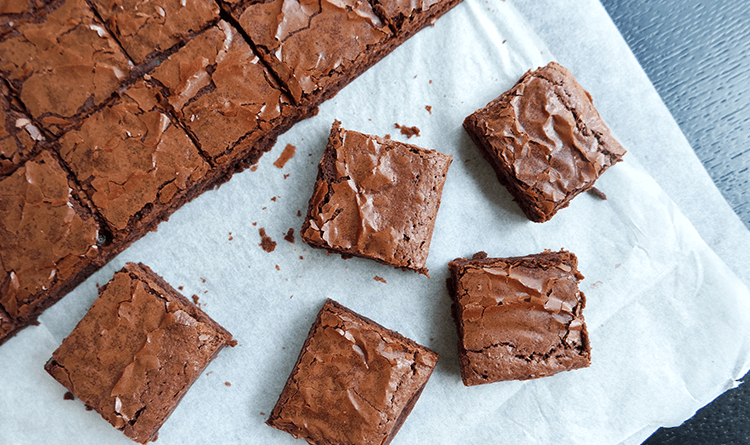

Brownie
Az malzemeli, Tam tutan nefis ıslak pratik olması gerektiği gibi, üzeri incecik kabuklu, iç ıslak mı ıslak herkesin mutfağında olması gereken en temel Brownie tarifim!
Tarif:Bengi Kurtcebe
4 Kişilik | Hazırlama Süresi: 10-15 dk | Pişirme Süresi: 30-40 dk

Malzemeler
- 2 yumurta
- 1 çay b şeker
- 1 çay b erimiş tereyağı
- Yarım çay b kakao
- Yarım çay b un
- Yarım pk vanilin
- Fiske tuz
- 1 paket sütlü çikolata-60 gr
Brownie'nin Yapılışı
- Şeker ve Yumurtayı iyice çırpın
- İçerisine erimiş tereyağını ilave edin
- Daha sonra vanilin,tuz ve ununu ilave edip
- Kalan bütün malzemeleri birleştirin
- Bir borcamın içine dökerek 170 derece kontorollü bir şekilde pişirin!
Afiyet Olsun